| 日付 | 2024年3月2日（土） |
|---|---|
| 山域 | 安蘇山塊 |
| メンバー | 単独 |
| 山行形態 | 日帰り |
| アクセス | 車 |
| ルート (Map) | さいこうふれあいセンター (8:41) - (8:48) 織姫神社 - (9:31) 両崖山 - (10:33) 大岩山 (10:53) - (11:09) 毘沙門天 - (11:28) 大岩山登山口 - (11:46) 天狗山登山口 - (12:04) 天狗山 - (12:47) 通七丁目 - (12:56) さいこうふれあいセンター |
1ヶ月振りの山登り。
ここ最近の雪で、高い山々は雪が積もっているので、
雪のない低山ハイキングをすることにする。
さいこうふれあいセンターの駐車場に車を停める。標高40m。
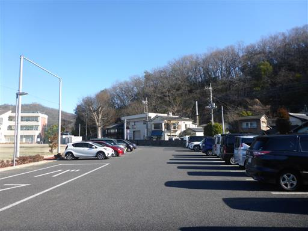
登山口は織姫神社。立派な鳥居だ。
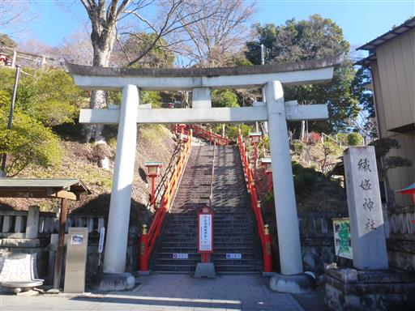
近くの歩道橋も織姫神社に合わせて、手すりが赤く塗られている。
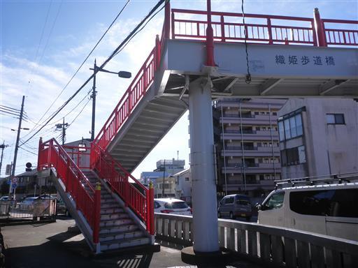
200段の階段を登っていく。
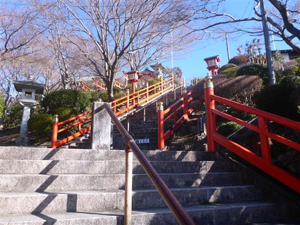
階段の手すりは消火栓となっているようだ。
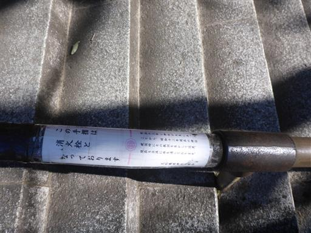
織姫神社に到着。朱塗りの美しい神社だ。
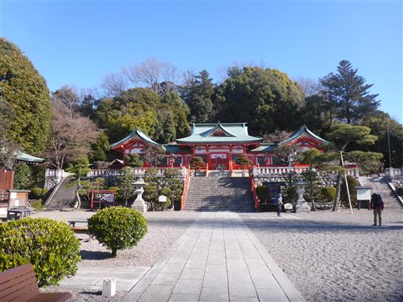
高台にあるため、境内からの展望が良い。奥に流れているのは渡良瀬川だ。
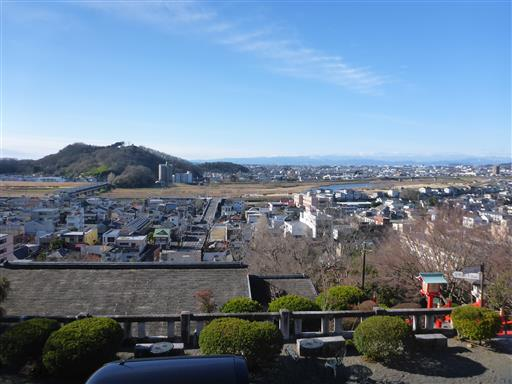
ここにも駐車場があるが、参拝客用で登山者は駐車禁止だ。
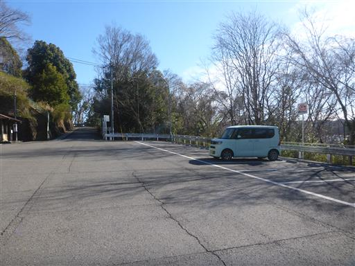
織姫神社の裏にある織姫公園。丸い丘は古墳らしい。
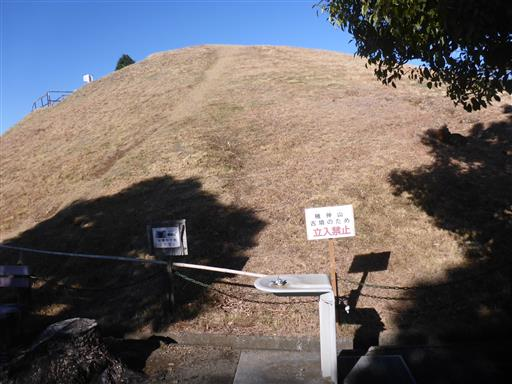
橋で車道を渡る。
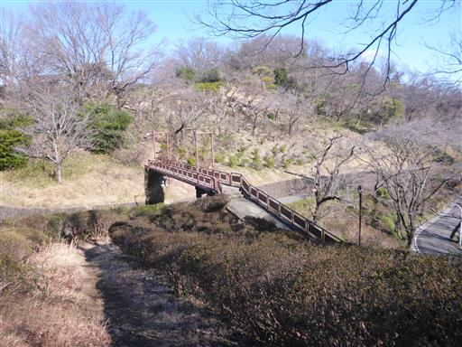
ようやく登山道らしくなってくる。
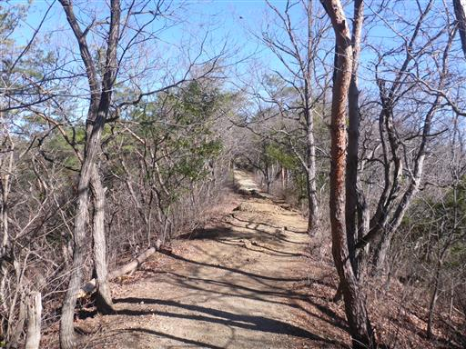
岩がちな尾根ではあるが、難所といえるような場所は全くない。
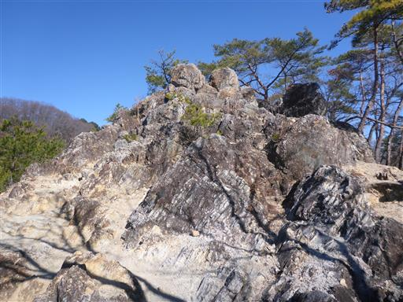
岩の上からは素晴らしい展望が広がる。
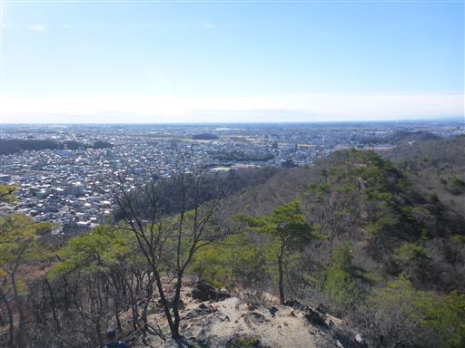
遠くに男体山と女峰山の頭が見える。
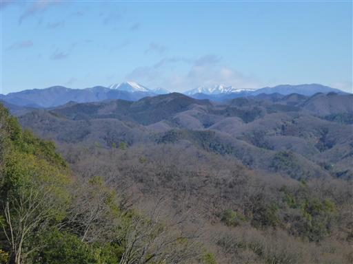
山頂直下は再び石段。
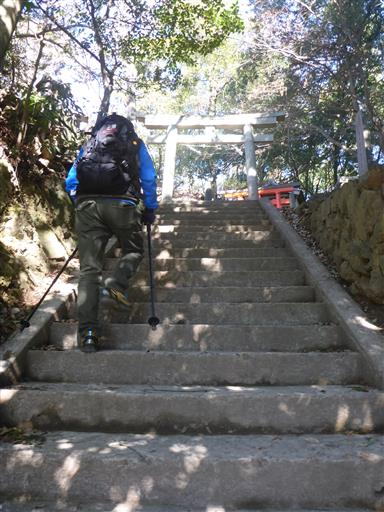
両崖山に到着。標高251m。
山頂は御岳神社になっている。また、ここは足利城跡でもある。
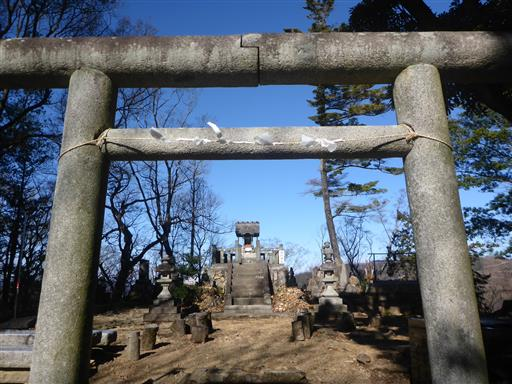
山頂からは展望がないので、休憩せずにすぐに出発する。
ここから天狗山に向かうのではなく、大岩山まで足を延ばす。
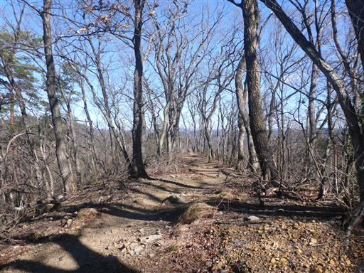
缶で作った風車？風を受けてくるくる回っている。
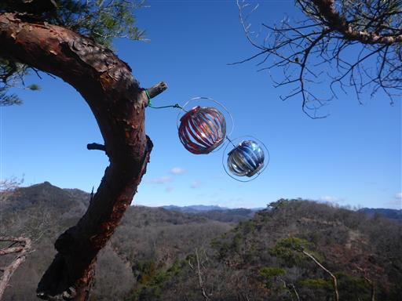
長く続く縦走路。大きなアップダウンはなく、比較的楽な道だ。
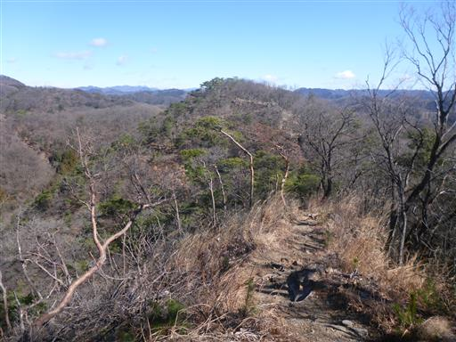
登り降りは階段。段差が大きく歩きにくいが長くは続かない。
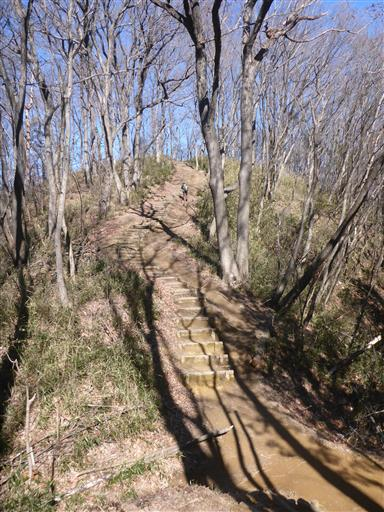
車道を横切る。トイレまで1.7kmと書かれている。結構な距離だ。
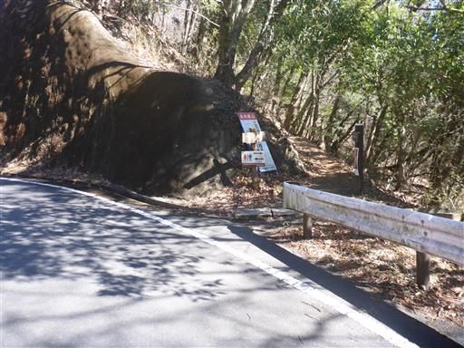
四角いブロック状に岩が割れている。
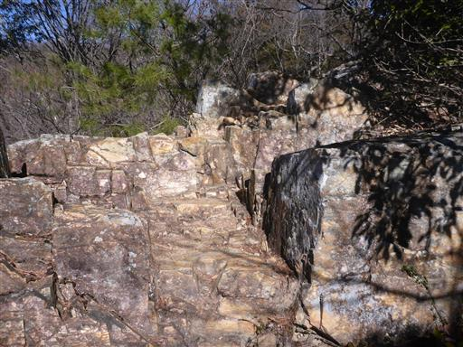
黒岩山を通過する。
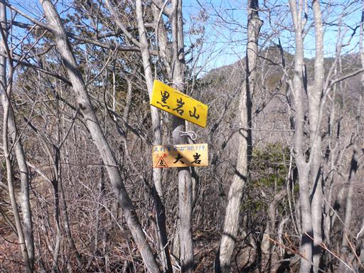
大岩山の山頂直下に到着。ここにも車道が通っている。
ここから一登りだ。

鬱蒼と木が茂っている。
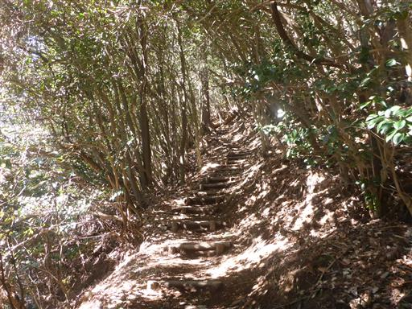
大岩山（剣ヶ峰）に到着。標高417m。
ここは娘が3歳の時に足利行道山に登った時に寄り道した場所だ。
10年振りの訪問だ。
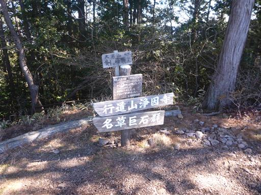
10年前は展望がなかったのだが、木が切られたようで展望が広がっている。
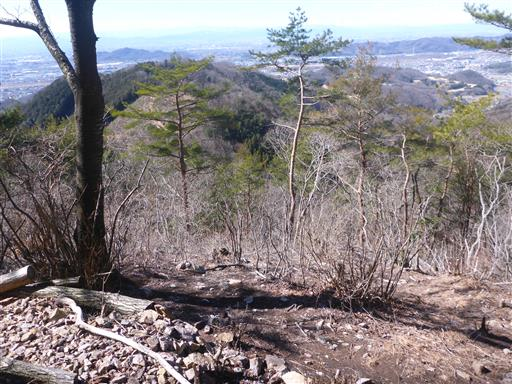
真白な浅間山が良く見える。
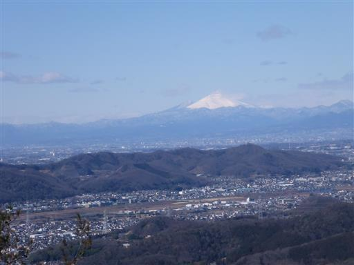
こちらは富士山。
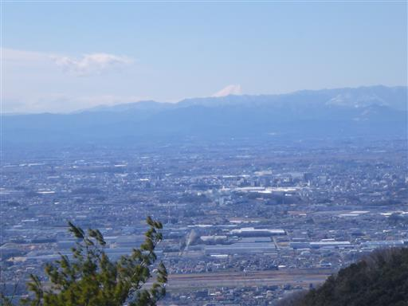
遠くの方には八ヶ岳も見えている。
風が吹き抜けてとても寒いが、ここで昼食休憩をとることにする。
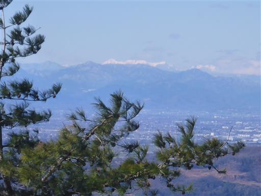
車道まで降ったら、車道を歩いて毘沙門天を目指す。
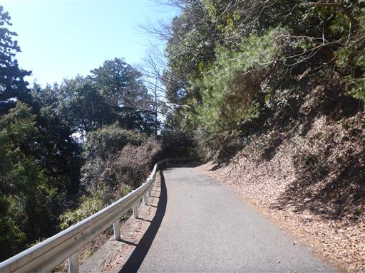
天空西公園に到着。青空の下、ベンチが並んでいる。
風がなく穏やかで、ここで昼食をとればよかった。
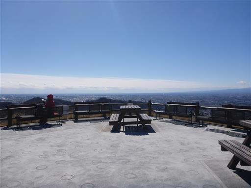
ここからは筑波山が見えている。
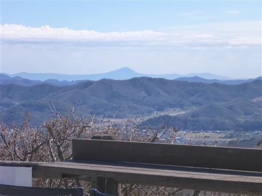
階段を降ると大きな建物が姿を現す。毘沙門天本堂だ。
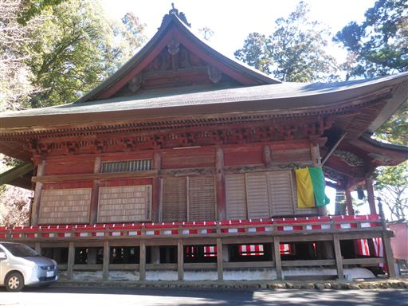
正面に回り込む。山の中にしては、ずいぶん立派な建物だ。
日本三大毘沙門天の一つらしい。

大岩山からの帰りなので、参拝は逆順。
階段を降って山門を潜る。
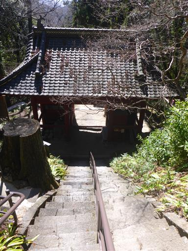
山門の金剛力士像は本物ではなく写真だ。
本尊や金剛力士像は2021年の山火事の際に避難を行い、現在は修復中とのことだ。
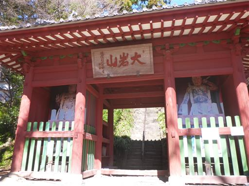
大岩山石造層塔。1256年に建立されたものらしいが、上部はほとんど失われている。
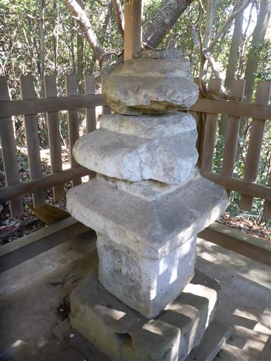
ここから男坂の尾根道を下山。

大岩山の登山口に下山する。
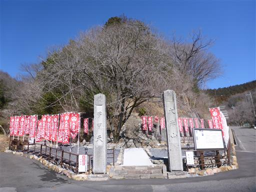
ここから天狗山を越える必要がある。天狗山登山口まで車道歩き。
道の真ん中に木が生えている。
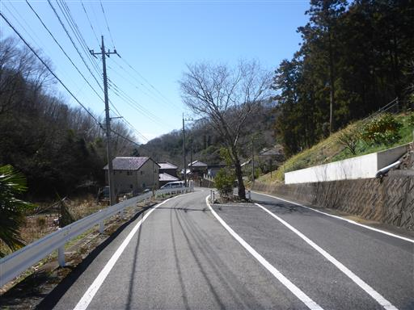
木の麓に小さな石祠がある。そんなに祀られるほど立派な木とは思えないが…
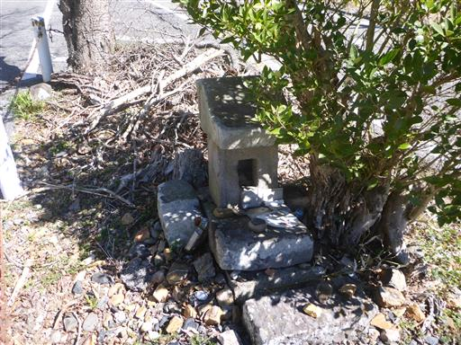
梅の花が咲いている。近づくとほのかに梅の香りがする。
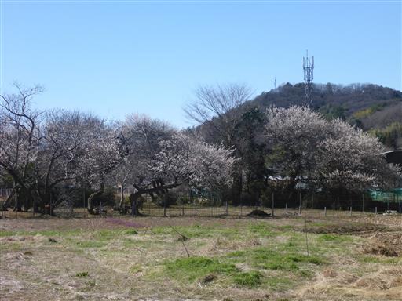
まさに裏山という感じ。長閑な風景。
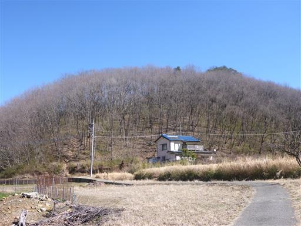
山間の道を歩いていく。

植えられているのは水芭蕉だろうか？
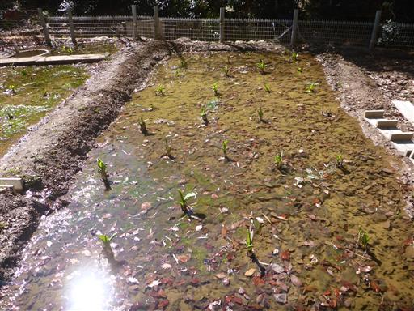
天狗山の登山口に到着する。ここからもう一山登る。
大岩山から両崖山に引き返して天狗山に至る道もあるのだが、
低い山のためアップダウンのある尾根道を戻るよりいったん下山した方が早い。
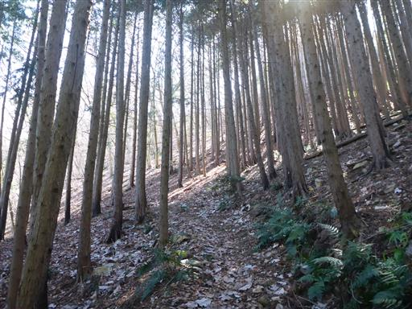
あっという間に天狗山に到着。標高259m。
天狗のお面がある。
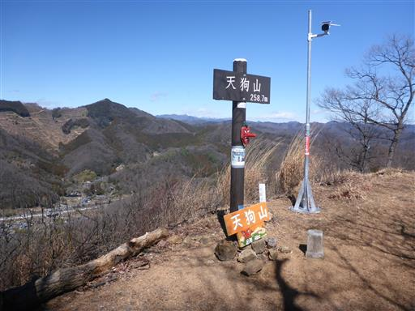
両崖山より展望が良いからか、こちらの山頂は結構人がいる。
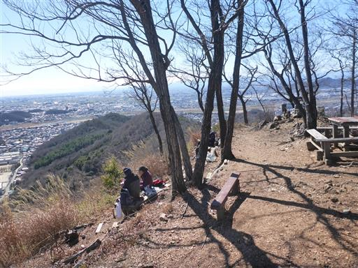
山頂からの景色。遠くまですっきりと見渡せる。
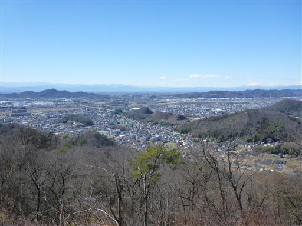
赤城山の山頂部が見えている。
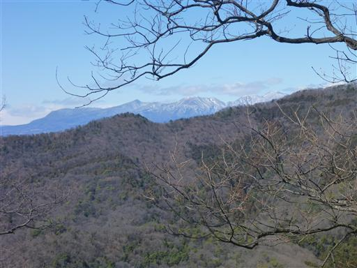
あとは尾根道を下山するのみ。
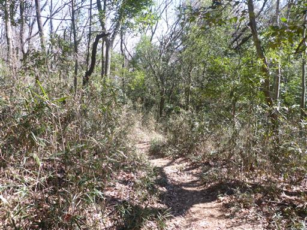
庚申塔が並んでいる。近くに墓地もある。
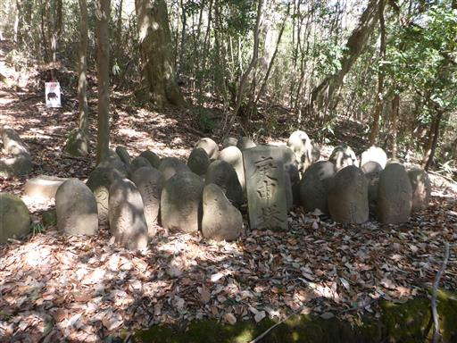
天狗山を下山。駐車場に戻る。
今回はのんびり低山ハイキング。歴史と春を感じられた一日だった。
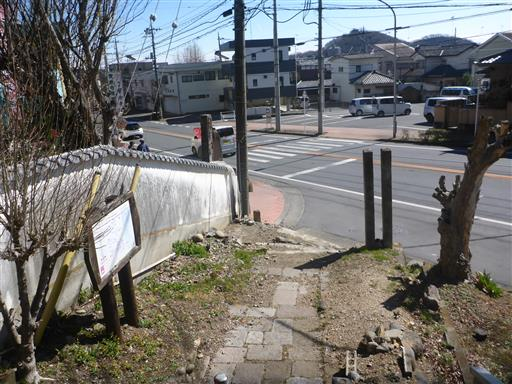